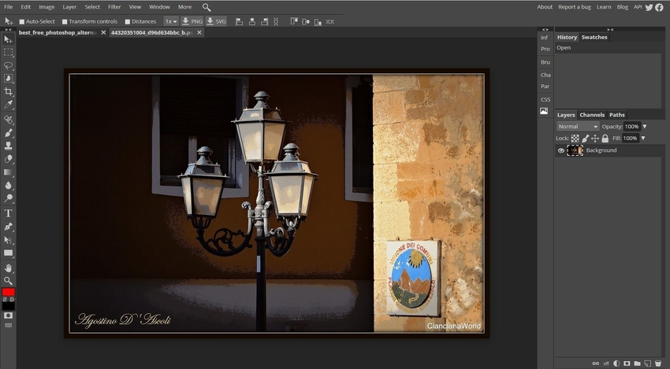

If you’re looking for comprehensive free Photoshop alternatives, the free trial of Luminar 4 is a fantastic option. Luminar combines photo management and advanced RAW editing. Luminar is perfect for professional photographers and designers.
Perhaps the most well known Photoshop alternative, GIMP has been around for ages and is one of the first programs that comes to mind for many people when they think “free Photoshop.” It’s an open-source program available for Windows, Mac, and Linux, and the official website offers a lot of helpful tutorials.
The Microsoft Windows 10 Photos app is included with any Windows 10 operating system. Just like Apple Photos, Windows 10 Photos also works as a photo organization system. It automatically displays all images saved in your Pictures folder and makes it easy to import images that are stored in other folders as well. The one-click-fix option instantly improves color, brightness, and contrast.
Apple Photos comes installed on every Mac computer and offers simple editing tools to quickly improve your photographs. It’s also a great place to store your images, allowing you to organize photos by date or arrange them into folders. Basic adjustments such as color correction, brightness, saturation, and contrast can be made at the click of a button.
Pixlr is unique because it’s a completely web-based photo editor. It allows you to make basic adjustments such as vignettes, color correction, saturation, contrast, and frames. The mobile version makes it easy to edit photos on the go.
Photo Pos Pro is free photo editing software that can do everything from retouching photos to making collages and creating business cards. It allows you to edit existing images as well as start new projects from scratch.
Raw Therapee is an open-source photo editing program that’s great for beginners. With just a few clicks, you can instantly sort photographs, improve exposure, adjust the color and white balance, increase clarity, and more. Raw Therapee also gives you the option to create collages and add frames to your photos.
LightZone is a free, basic photo editor that allows users to instantly perform basic color corrections, adjust white balance, and improve exposure.
LightZone Darktable is an image editor that’s often marketed as a Lightroom alternative, although it offers limited functionality compared to Adobe products. However, it does offer great tools for basic image enhancement, which is a good starting point for beginners. It also allows you to create and save your own presets, making one-click editing a breeze.
Photopea is another online photo editor that doesn’t require users to download any software. It supports a range of file formats including PSD yet doesn’t offer all of the editing tools that Photoshop does.
InPixio is actually a collection of software that begins with Photo Editor and includes five other programs: Photo Focus, Photo Clip, Photo Eraser, Photo Maximizer, and Photo Cutter. The free version of InPixio is simple to use and offers a range of filters, frames, and textures to improve your images.
Photopeais another online photo editor that doesn’t require users to download any software. It supports a range of file formats including PSD yet doesn’t offer all of the editing tools that Photoshop does.
While PhotoScape X is primarily marketed as a photo editor, it does so much more. It supports batch editing, screen captures, animated GIFs, RAW image processing, image stitching, and other features. PhotoScape X makes it easy to add text and graphics to images and offers many of the same brushes and tools as Photoshop.
InkScape is primarily geared toward graphic designers who want to work with vector images. Instead of being marketed as an alternative to Photoshop, it’s more like an alternative to Illustrator. Even so, you can use it to make basic adjustments to photographs such as cropping and cutting and pasting. It’s also a great way to convert photographs into vector images!
While Polarr is a simple photo editing program that aims to enhance images with filters. There are plenty of filters to choose from, allowing users to perfect their images with just one click. Aside from the filters already included in the program, users can create and save their own if they purchase the Pro version.